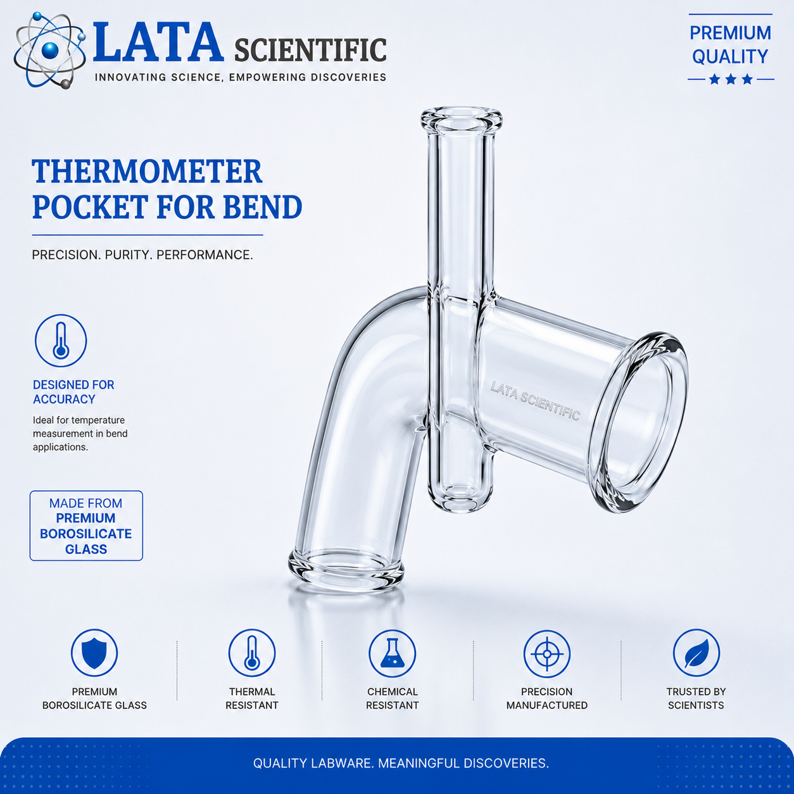
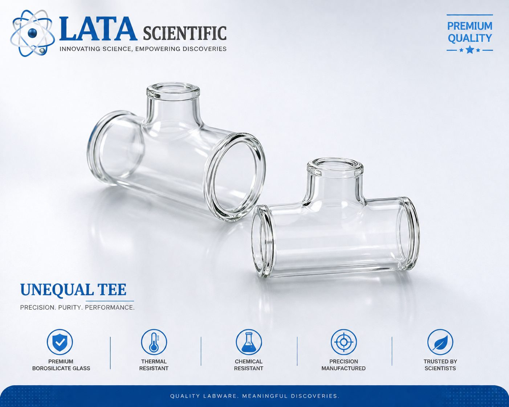

Made to Order


Glass 90° bend with DN 25 instrument branch, DN 40 to DN 300
Glass 90° bend with a DN 25 branch for a thermometer or probe — DN 40 to DN 300, with L and L1 dimensions.
| Product type | Glass 90° bend with thermometer branch |
|---|---|
| Material | Borosilicate 3.3 |
| Nominal bore range | DN 40 to DN 300 with DN 25 branch |
| End connection | Beaded pipe ends with backing flanges and PTFE-envelope gaskets |
| Flange drilling | See the drilling table — BS 10 Table E, BS 10 Table F and ASA drilling available |
| Pressure rating | Not published on the component datasheet — confirm with us for your duty |
| Temperature rating | Not published on the component datasheet — confirm with us for your duty |
| Dimensional standard | As per the Lata Scientific component datasheet |
Product overview
Putting a temperature probe into a bend rather than a straight section saves a fitting and puts the sensor where the flow is well mixed. This bend carries a DN 25 branch on the elbow for exactly that.
The branch is DN 25 across the whole range from DN 40 to DN 300, so one probe size fits every line. Two dimensions are given: L for the run and L1 to the branch face.
Features
Benefits
Applications & industries
Technical data
Figures below are for this product only — every item in the range carries its own dimension table.
| Product type | Glass 90° bend with thermometer branch |
|---|---|
| Material | Borosilicate 3.3 |
| Nominal bore range | DN 40 to DN 300 with DN 25 branch |
| End connection | Beaded pipe ends with backing flanges and PTFE-envelope gaskets |
| Flange drilling | See the drilling table — BS 10 Table E, BS 10 Table F and ASA drilling available |
| Pressure rating | Not published on the component datasheet — confirm with us for your duty |
| Temperature rating | Not published on the component datasheet — confirm with us for your duty |
| Dimensional standard | As per the Lata Scientific component datasheet |
| Catalogue reference | APBT series, e.g. APBT4 = DN 100 |
| Cat. Ref. | DN | DN1 | L | L1 | Type |
|---|---|---|---|---|---|
| APBT1.5 | 40 | 25 | 150 | 225 | A |
| APBT2 | 50 | 25 | 150 | 225 | A |
| APBT3 | 80 | 25 | 200 | 275 | B |
| APBT4 | 100 | 25 | 250 | 350 | B |
| APBT6 | 150 | 25 | 250 | 375 | B |
| APBT9 | 225 | 25 | 375 | 525 | B |
| APBT12 | 300 | 25 | 450 | 550 | B |
All dimensions in mm, transcribed exactly from the component datasheet.
FAQ
Yes — the datasheet lists DN 25 for the branch at every bore from DN 40 to DN 300.
No, the branch is the connection. See the thermometer pocket for bend, which is the pocket that fits into it.
Related products




Enquiry
Send the bore, the media, the temperature and pressure, and the flange standard you work to. Drawings and custom sizes welcome.
Send your requirement — media, temperature, pressure, dimensions — and we'll recommend the right product or fabricate it.
Talk to an engineer